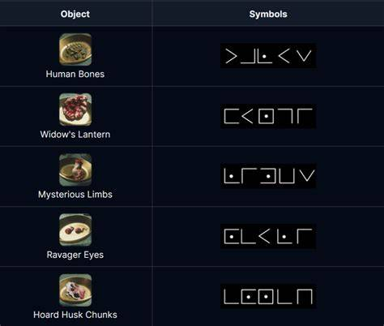

to start the blood step you need to find all 6 pieces of the chemical step to make sure on how to get the parts. in the step after gathering them all you well need to go to the research room and look at the symbols on the chalk board then after completing it with the code above then you can make the sacerfice blood then there well be a lot of zombies coming at you. during this time you need to make sure that you dont die with only 75 hp, getting kills with the wonder weapon will be very helpfull due to the fact that kills with the wonder weapon heals you and with equipment you can make it a lot easier